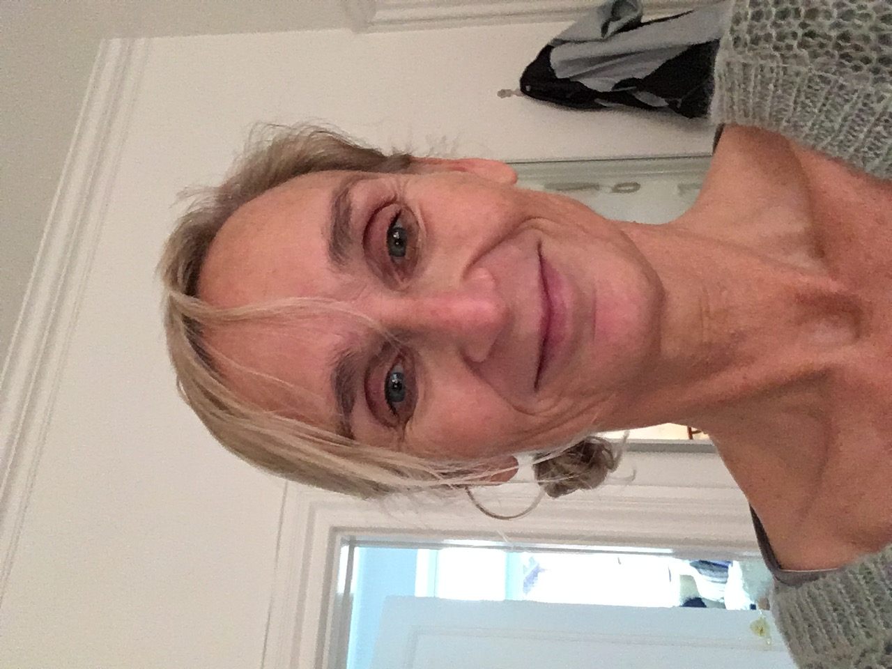

Specialpsykolog i psykiatri med mange års erfaring.
Uddannet fra Århus Universitet i 2006. Specialpsykolog i psykiatri samt specialist i psykoterapi og psykopatologi. Derudover supervisor i psykopatologi.
Mange års erfaring med arbejde med mennesker med psykiske og psykiatriske vanskeligheder som forskellige angsttilstande, depression, traumer, psykoselidelser og forskellige former for stressreaktioner.
Bred erfaring med psykologiske undersøgelser og diagnostisk udredning, herunder 2nd opinion. Undervisning og supervision af tværfagligt personale.
Beskrives bedst som en slags entreprenør, der udvikler og skaber nye tilbud og initiativer ud fra det foreliggende. Således deltaget i forskning og projektudvikling – både i det store og i det små.
Særlig erfaring med pårørende, og mennesker med komplekse problemstillinger, med samtidig tilstedeværelse af psykisk lidelse, afhængighed af rusmidler, udad- og indadreagerende adfærd.
Har flere forskellige former for efteruddannelse i psykoterapi; psykodynamisk, kognitiv adfærdsterapi, narrativ traumeterapi, tegneterapi og EMDR.